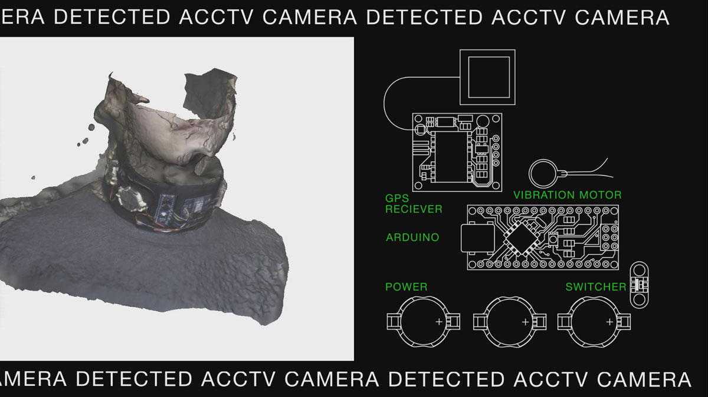
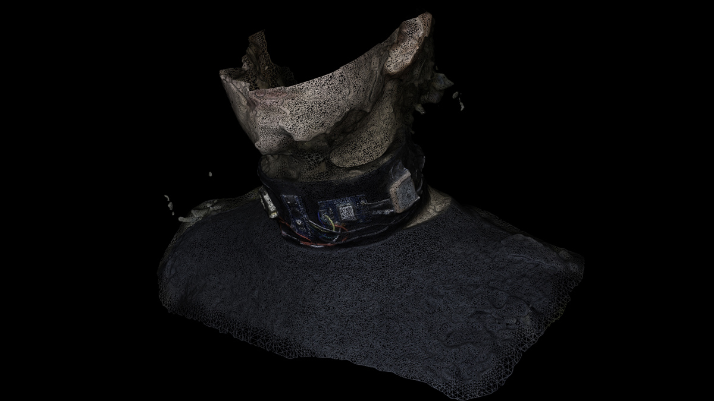
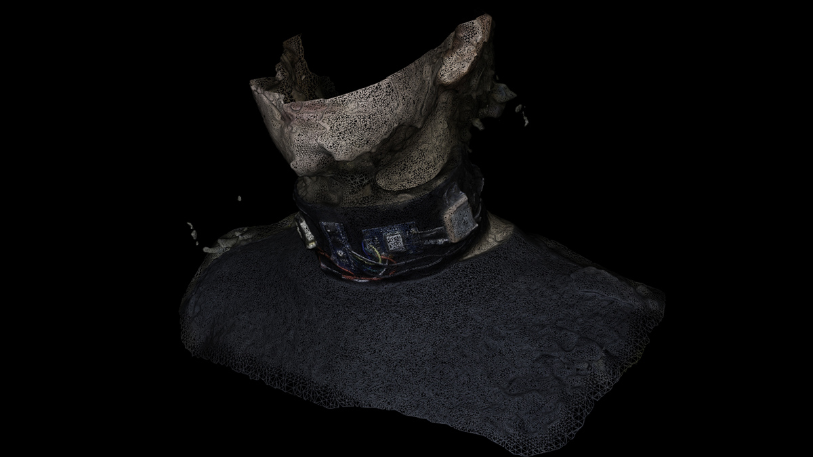

ACCTV 2019
wearable electronic device
аССTV is a jewellery, which allows the owner to know if he/she is near a CCTV camera in the city or not. It realized using data from the open data portal about surveillance cameras in Moscow and gps receiver, which compares the data of the owner’s location and the data from the portal. aCCTV is a jewellery-organoprojection. A person has 5 senses: sight, smell, hearing, taste, touch. With this device, it gets a sense of tracking, now this feeling is not needed, but I come up with this need and, accordingly, create an object of speculative design for that sense. Of course, the project also brings up the subject of invasion of the personal space of a person, etc. Could it be a phone app? Yes, but it would lose its ability to be a new organ sense, taken out of the body itself. The structure of the phone is hidden from us, but I decided to bring the «architecture» of my device out and make it an object of design, the design comes from functionality
 
